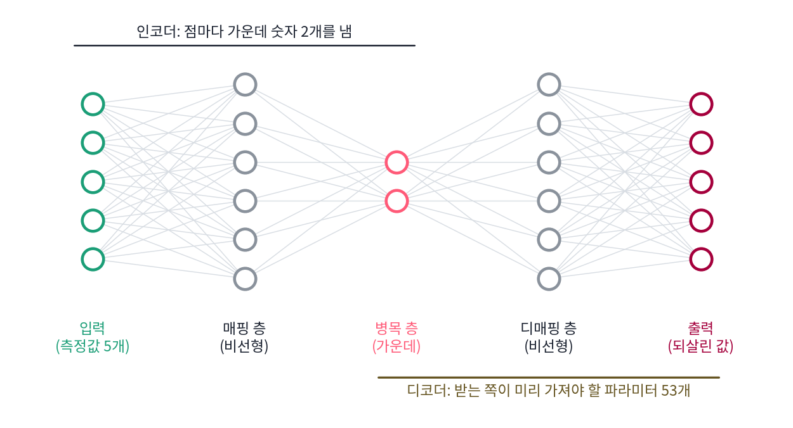
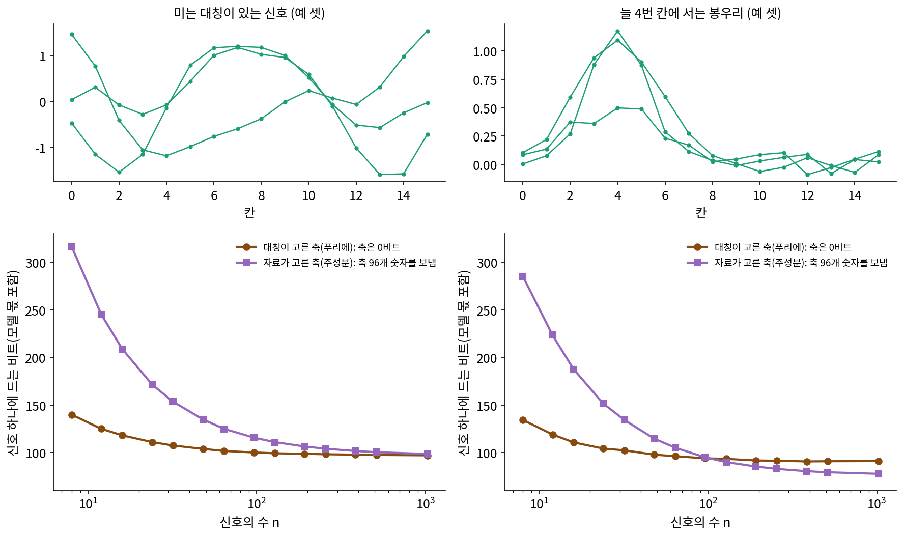
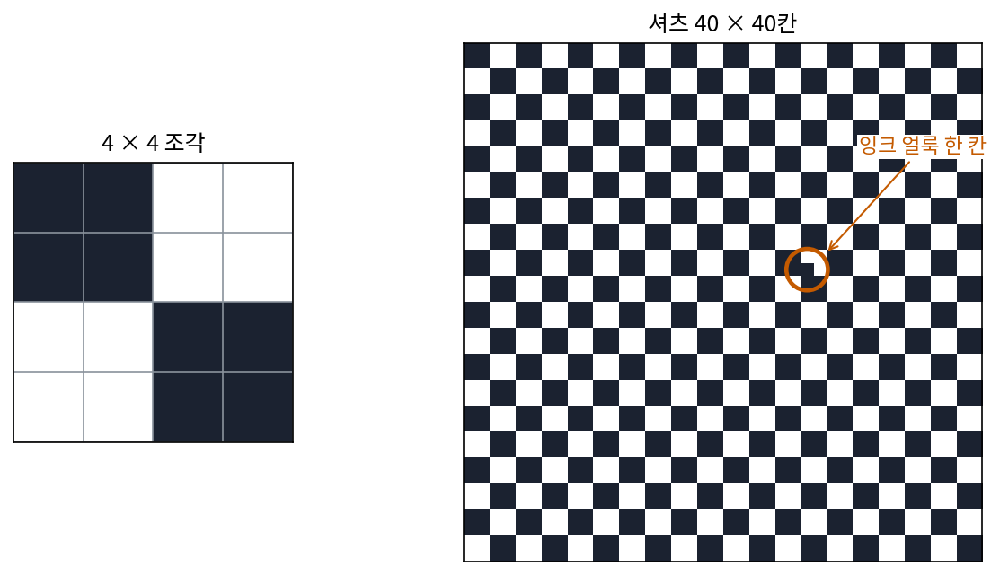
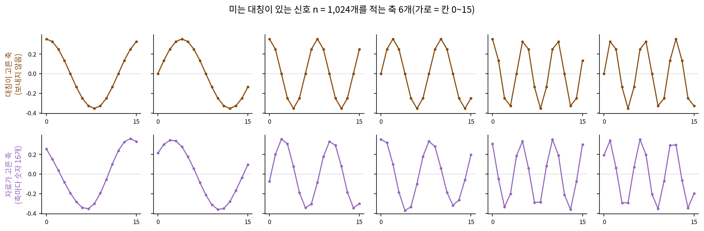
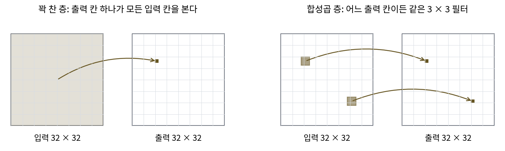

받는 쪽이 이미 아는 것: 대칭이 고른 축, 매니폴드, 디노이저
모델까지 세어야 공평하다는 최소 기술 길이의 셈은 이 책의 기둥이었다. 그런데 신호처리에서 신호를 푸리에 축으로 적을 때는 축을 적는 비트를 한 번도 세지 않았다. 주성분 분석의 축은 자료마다 다시 골라 보내야 하는데, 사인과 코사인은 왜 보내지 않아도 될까? 매니폴드를 아는 사람은 자리 몇 개만 적으면 된다는 말, 디노이저가 자료가 사는 곳을 품고 있다는 말에도 같은 물음이 숨어 있다. 여기서 「받는 쪽」은 코드를 받아 원래 자료를 되살리는 사람인데, 받는 쪽이 이미 아는 것은 누가 언제 치른 비트일까?
역사: 가운데가 좁은 신경망
1991년 MIT 화학공학과의 크레이머(Mark A. Kramer)는 『AIChE 저널』에 「자기 연상 신경망을 쓴 비선형 주성분 분석(Nonlinear Principal Component Analysis Using Autoassociative Neural Networks)」을 실었다. 공정 자료처럼 여러 측정값이 서로 굽은 관계로 얽혀 있을 때, 주성분 분석은 직선 관계만 찾는다는 것이 그의 고민이었다. 그는 입력을 그대로 출력으로 되살리도록 신경망을 학습시키되, 가운데 층의 칸 수를 입력보다 훨씬 적게 두었다. 이렇게 가운데 층의 값 몇 개가 굽은 관계까지 담은 「주성분」이 되는 신경망은 오늘날 오토인코더라 부르는 구조의 이른 예다.
압축의 눈으로 보면 이 구조는 일을 둘로 나눈다. 앞 절반(인코더)은 점마다 가운데 층의 숫자 몇 개를 내고, 뒤 절반(디코더)은 그 숫자로 점을 되살린다. 점마다 보내는 것은 숫자 몇 개뿐이지만, 받는 쪽은 디코더 전체를 미리 가지고 있어야 한다. 크레이머의 논문은 이것을 비트로 세지 않았는데, 디코더를 적는 비트까지 세면 어떻게 되는지가 이 절의 물음이다.


가운데를 좁게 두고 입력을 되살리게 하는 신경망이면, 지금은 파이토치로 열 줄이면 짜요.

1991년은 역전파 학습이 널리 알려진 1986년에서 다섯 해 뒤였어요. 크레이머는 굽은 관계를 담으려고 가운데 층 앞뒤에 층을 하나씩 더 두었는데, 층을 그렇게 겹겹이 쌓은 신경망을 학습시키는 일 자체가 그때는 까다로웠어요.

가운데 칸 수는 어떻게 정해요? 음, 너무 적으면 못 되살리고, 입력만큼 많으면 그냥 베껴 내기만 할 텐데요.

되살린 오차만 보면 칸이 많을수록 늘 좋아 보여요. 크레이머의 논문은 오차 말고 디코더를 적는 비트는 세지 않았고요.

아, 디코더가 클수록 점을 되살리는 사람이 미리 가지고 있어야 할 게 커지는데, 그건 오차에 안 나오네요.
오토인코더의 목표를 코드 길이(코드를 적는 비트와 되살린 오차를 적는 비트의 합)로 읽은 논문은 1994년 힌턴과 제멜에게서 나와요. 크레이머보다 세 해 뒤예요. 그 논문도 디코더의 파라미터를 적는 비트는 셈에 넣지 않았어요.

그러면 되살리는 사람이 미리 가진 디코더의 비트는 자료 하나하나가 내는 게 아니라, 누가 언제 내는 거예요?
축을 보내느냐, 받는 쪽이 만드느냐
칸 16개짜리 신호를 두 가지 마련했다. (ㄱ)은 느린 물결 셋(1번, 2번, 3번 물결, 세기 1, 0.6, 0.3)을 위상만 무작위로 바꿔 더한 신호여서, 칸을 고리처럼 이어 붙였을 때 어느 칸에서 보아도 통계가 같은 미는 대칭이 있다. (ㄴ)은 늘 4번 칸 둘레에 서는 봉우리 하나로 높이와 폭만 신호마다 다르며, 두 신호 모두 칸마다 표준편차 0.05의 노이즈를 더했다.
신호 n개를 축 6개로 적는다. 신호마다 축 6개의 계수와 남은 10방향의 잔차를 0.01 정밀도로 적고, 평균과 표준편차 같은 파라미터는 16비트씩 센다. 축을 고르는 방법은 둘이다.
- 대칭이 고른 축: 1·2·3번 물결의 코사인과 사인 6개. 받는 쪽이 「칸이 고리로 이어져 있고 미는 대칭이 있다」는 것만 알면 직접 만들 수 있으므로 보내지 않는다.
- 자료가 고른 축: 그 신호 n개로 고른 주성분 6개. 축마다 숫자 16개, 모두 96개를 16비트씩, 1,536비트를 더 보내야 한다.

미는 대칭이 있는 신호에서는 어느 n에서도 대칭이 고른 축이 짧다. 자료가 고른 축도 결국 물결 모양에 가까워지지만, 받는 쪽이 대칭만으로 만들 수 있는 축을 1,536비트 들여 보내는 것이다. 4번 칸 봉우리에서는 순서가 바뀐다. 봉우리는 물결 몇 개로 잘 적히지 않아 잔차가 크고, 신호 하나에 드는 비트가 91비트 근처에서 더 내려가지 않는다. 자료가 고른 축은 처음에는 축 값이 무거워 길지만, 신호가 96개에서 128개 사이를 넘으면 신호 하나가 나눠 지는 축 값의 비트가 작아져 더 짧아진다. 1,024개에서는 신호 하나에 77.6비트로, 대칭이 고른 축의 91.1비트보다 13비트 넘게 짧다.
그러면 대칭이 준 압축은 정말 공짜일까? 대칭이 고른 축은 비트가 들지 않은 것이 아니라, 「미는 대칭이 있다」는 짧은 사실 하나로 축 96개 숫자를 대신한 것이다. 그 사실이 자료에 맞으면 축 값을 아끼고, 맞지 않으면(봉우리처럼) 잔차로 더 치른다. 미분기하학의 매니폴드도 같은 구조다. 자료가 어떤 낮은 차원의 곳 위에 있는지 아는 사람은 점마다 그곳 위의 자리 몇 개만 적으면 되지만, 그곳의 모양은 누군가 한 번 적어 두어야 한다. 디노이저는 그 모양을 신경망의 파라미터로 적어 둔 것이다. 자료가 사는 곳에서 벗어난 방향을 지우는 디노이저를 가진 쪽은 노이즈에서 출발해 디노이저를 거듭 불러 그곳의 점을 되살린다. 디퓨전의 생성을 압축 풀기로 읽는 것은 이 뜻이다.
ML에서: 합성곱은 대칭을 구조에 박아 넣은 압축이다
합성곱 신경망은 그림의 어느 자리에도 같은 필터를 댄다. 고양이가 왼쪽 위에 있든 오른쪽 아래에 있든 같은 무늬로 찾겠다는 뜻이고, 그림에 미는 대칭이 대략 있다고 미리 믿는 것이다. 그 믿음 덕분에 자리마다 따로 두었을 가중치를 필터 하나로 묶어 적으니, 대칭이 고른 축이 「미는 대칭이 있다」는 사실 하나로 축 값을 아낀 것과 같은 구조다. 필터 하나로 얼마나 아끼는지, 그리고 어떤 자료에서 그 믿음이 손해가 되는지는 아래 문제 6에서 센다.
문제 4. 체크무늬 셔츠
가로세로 40 × 40칸의 흑백 체크무늬 셔츠 무늬를 친구에게 칸마다 흰/검 1비트로 보내려 한다. 무늬는 4 × 4칸짜리 조각이 빈틈없이 되풀이된 것이다. (가) 칸을 그대로 보내면 몇 비트이고, 친구가 「4 × 4 조각이 되풀이된다」는 것을 알면 몇 비트면 되는가? (나) 이 셔츠 한 벌의 한 칸에 잉크 얼룩(흰 칸이 검게)이 있다. 얼룩까지 보내려면 몇 비트를 더해야 하는가? (다) 「되풀이된다」는 사실은 누가 언제 알고 있어야 하는가?

(가)는 칸을 그대로 보내면 1,600비트예요. 친구가 「4 × 4 조각이 되풀이된다」는 걸 알면 조각 16칸만 보내면 되니까 16비트고요.
100배 짧네. 그런데 친구가 그걸 모르면? 「가로세로 열 번씩 깔아라」는 말은 안 보냈잖아.
모르면 그 규칙을 적는 비트가 더 들지. 그래도 규칙은 「4 × 4를 되풀이」 정도라 1,600비트에 비하면 아주 짧아.
그럼 (나)의 얼룩은요?
얼룩은 되풀이를 안 따르니까 따로 적어야 해요. 1,600칸 가운데 한 칸을 가리키려면 log₂ 1,600 = 10.64비트, 그러면 16 + 10.64 = 26.64비트예요.

조각은 16칸인데 얼룩 하나가 10비트 넘게 드네요. 되풀이 규칙은 얼룩 앞에서는 아무 도움이 안 돼요.

그래요. 대칭을 아는 건 대칭을 따르는 부분만 공짜로 만들어요. 따르지 않는 부분은 따로 값을 치러야 하고요. (다)는 위 봉우리 실험과 같은 이야기예요. 받는 쪽이 무엇을 미리 아느냐에 따라 같은 자료의 길이가 달라져요.

악보의 도돌이표 같아요. 같은 마디를 다시 안 적어도 되지만, 연주하는 사람이 도돌이표를 읽을 줄 알아야 하잖아요. 도돌이표를 모르는 사람한테는 결국 마디를 다 적어 줘야 하고요.
문제 5. 대칭이 맞는데도 주성분이 자료 비트를 덜 쓴다
위의 미는 대칭이 있는 신호에서 n = 1,024일 때, 자료가 고른 축은 대칭이 고른 축보다 모두 1,474비트 길었다. 그런데 축 값을 보내는 데 든 비트는 1,536비트였다. (가) 나머지 62비트는 어디서 생겼는가? (나) 그 62비트는 진짜 이득인가? 새로 뽑은 신호 1,024개를 같은 축으로 적으면 어떻게 되겠는가? (위젯 2에서 「미는 대칭이 있는 신호」와 n = 1,024를 골라 보자.)

자료가 고른 축이 자료 비트를 62비트 덜 쓴 거네요. 그럼 자료가 고른 축이 실제로 조금 더 좋은 축인 거죠. 대칭이 있어도 데이터로 고르는 게 낫다는 뜻 아닌가요?
자료가 고른 축은 어떤 신호들로 골랐죠? 그리고 그 축으로 적은 신호는요?
같은 1,024개예요. 고른 자료로 다시 재니까 유리할 수밖에 없어요. 노이즈도 우연히 어느 방향으로 조금 쏠려 있을 텐데, 주성분은 그 쏠림까지 축에 담아요.
그럼 새 신호로 재 봐야겠네요. 스크립트로 새 신호 1,024개를 뽑아서 같은 축으로 적어 봤어요. 이번에는 자료가 고른 축이 대칭이 고른 축보다 99비트 더 써요. 더 좋은 축이 아니었네요.
그래요. 62비트는 이 1,024개의 노이즈에 맞춰 줄인 비트라서, 새 신호에서는 사라지고 오히려 손해로 바뀌었어요. 처음 그림의 구불구불한 고리도 학습 점에 맞춰 자료 비트를 90비트 줄였지만, 새 점에서는 원보다 길었어요. 두 부분 코드가 축 값 1,536비트를 꼬박 물려서 이 착시를 막아 준 거고요.

우리 집 오븐 하나로 구워 보면서 굽는 시간을 1분 단위로 다듬은 레시피가, 우리 오븐에서는 완벽한데 친구네 오븐에서는 타 버린 적이 있어요. 그 1분 단위 다듬기가 62비트였네요.
문제 6. 합성곱 층과 꽉 찬 층
32 × 32 흑백 그림을 같은 크기의 그림으로 바꾸는 층을 만든다. (가) 출력 칸마다 모든 입력 칸을 보는 꽉 찬 층과, 모든 자리에 같은 3 × 3 필터를 대는 합성곱 층의 가중치는 각각 몇 개인가? 가중치 하나를 16비트로 적으면 각각 얼마인가? (나) 합성곱 층이 꽉 찬 층보다 나쁜 자료는 어떤 자료인가? 위젯 2의 「늘 4번 칸에 서는 봉우리」와 비교해 말하라.

(가)는 꽉 찬 층이 1,024 × 1,024 = 1,048,576개, 합성곱은 9개예요. 116,508배 차이고, 16비트로 적으면 2.0 MiB 대 144비트요.
합성곱 층 9개로 만들 수 있는 변환은 꽉 찬 층으로도 만들 수 있나요? 거꾸로는요?
합성곱은… 꽉 찬 층에서 멀리 떨어진 칸의 가중치를 모두 0으로 둔 거 아닐까요? 3 × 3 바깥은 안 보니까요.
0만 두면 가중치가 9개로 줄어드나요?

아니요, 그럼 출력 칸마다 따로 9개씩이라 훨씬 많겠네요. 같은 방향으로 같은 만큼 떨어진 칸끼리는 가중치가 모두 같아야 해요. 그 두 조건을 붙인 꽉 찬 층이 합성곱이에요.
그럼 거꾸로는? 꽉 찬 층이 하는 걸 합성곱이 다 할 수 있어?
그건 못 해. 왼쪽 위 칸만 밝게 하는 층 같은 건 못 만들어. 모든 자리에 같은 필터를 대니까.

그럼 자리마다 다르게 해야 하는 자료에서는 합성곱이 못 따라가겠네. 봉우리 신호가 그렇지? 봉우리가 늘 4번 칸에만 서니까 4번 칸이 특별하잖아.
위젯 2에서 봉우리 신호를 골라 n 을 늘려 보세요. 대칭이 고른 축과 자료가 고른 축은 어디서 순서가 바뀌나요?
96개까지는 대칭이 고른 축이 짧고, 128개부터 자료가 고른 축이 짧아요. 자료가 적으면 대칭을 믿는 게 낫고, 많으면 자리마다 다른 사정을 배우는 게 나아요.

얼굴 사진을 눈 위치에 맞춰 잘라 둔 자료라면 「눈은 늘 이 칸에 있다」는 게 4번 칸 봉우리랑 같은 사정이네요. 그때는 자리를 가리지 않는 합성곱이 그 사정을 일부러 버리는 셈이고요.
그래요. 합성곱의 9개는 「대칭이 맞다」는 믿음을 미리 치르고 얻은 할인이에요. 믿음이 맞는 만큼 아끼고, 어긋나는 만큼은 자료가 많아질수록 손해가 커져요.
학식 정기권 같아요. 매일 학교에 오면 이득인데, 방학에 끊어 두면 손해예요.